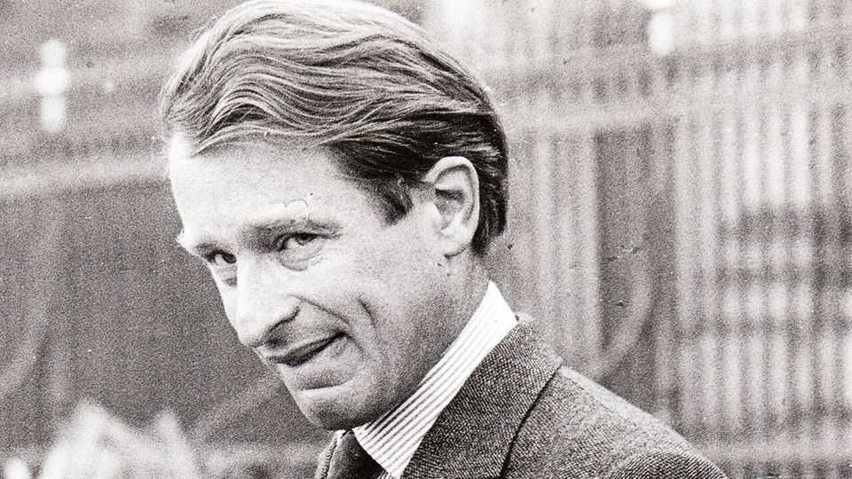

Humphrey Smith dictated what a good pub should be
The lord high brewer of Tadcaster died on June 19th, aged 81
July 16th 2026

What makes an ideal English pub? In a book review of 1946, George Orwell knew. In his favourite, The Moon Under Water, the clientele were mostly “regulars”, “who occupy the same chair every evening and go there for conversation as much as for the beer”. The fittings were “uncompromisingly Victorian”, from the grained woodwork to the cast-iron fireplaces. The house had neither a radio nor a piano, and any singing “is of a decorous kind”.
Humphrey Smith took this to heart. As owner for nearly four decades of the proudly independent Samuel Smith Old Brewery in Tadcaster, North Yorkshire (estd. 1758), he wanted his pubs to fit Orwell’s template. And there were a lot of them: almost 300 scattered up and down Britain, mostly in small villages in the north, but also in Bristol and Bath, and 39 in London. There he owned some famous hostelries, including Ye Olde Cheshire Cheese in Fleet Street, the haunt of Dickens and Dr Johnson.
Accordingly, all his pubs had a certain look and sound about them. Dark, cosy, heavy on the leather and brass, with not a TV or a piano about. No Muzak, either; just the buzz of conversation. Nothing was for sale that was not brewed by Samuel Smith or grown in Yorkshire, even to the crisps; but no branding was allowed, inside or out. The beer (Old Brewery Bitter, Nut Brown Ale and Yorkshire Stingo, to name but a few) had been brewed from Tadcaster spring water filtered through Permian limestone, and the worts had been fermented in rare slate tanks called Yorkshire squares. Barrels were made on the premises by his own coopers, and those going to pubs round Tadcaster were delivered on a dray by two magnificent grey shire horses stabled in the brewery.
After all this care, he was not about to let his pubs let him down. So they also featured notices asking customers to respect the rules. There were many. No dogs, no mobile phones except outside, no laptops or tablets. No children, unless dining. No bikers or general undesirables. No men kissing each other, and no swearing. This last rule, relatively new, came in after he overheard a man using the F-word outside the Fox and Goose in Droitwich. Any staff hearing such a word were to ask the culprit to refrain. If the culprit did not do so, they must refuse to serve him.
Humphrey could enforce these rules because, in 1984, he had imposed an important rule himself. Henceforth all those who ran Samuel Smith pubs were not tenants who could act on their own initiative, but managers, employed by the brewery (himself) directly. Couples were strongly preferred, and were paid around £50,000 ($67,000) a year. Aspiring applicants went on a week-long course to learn, among other things, about the brewery’s traditions. And woe betide if they fell short.
He did spot-checks himself, turning up suddenly with a little folder under his arm. Having visited the gents first, he would order a half of Old Brewery Bitter, always that, and sup it in a corner, looking carefully round. The upshot could be dire. If he found anything amiss, he would close the pub down with immediate effect. The next day his men would remove the alcohol, and the managers, who had to live on-site, would be out on the street. He did not always give his reasons. At The Abbey near Derby they offended him by posting pictures of the pub on the internet, at the New Inn in Stamford Bridge by putting perfume, he thought, in his beer, at the Cow and Calf outside Sheffield by failing to produce a chocolate fondant for dessert. That was his favourite, as they should have known.
But then no one truly did know him, when all was said. Few men were as private as he was. He wanted no outsiders poking around in the brewery or nosing in the accounts, and in 1982 he had made his company unlimited, so no one could. (In 2018, when he refused to divulge information to the tiresome pensions regulator, he and the brewery ended up being fined nearly £28,000.) School had been at Eton, where it was hard to fit in with the posh boys, and after that it was back to the brewery. As lord of it he gave no interviews, ducked his head out of the way of any camera, and lived in such secrecy in Oxton Hall, outside Tadcaster, that the only up-to-date picture of it showed just the drive-in and a hedge.
In Tadcaster itself, where he seemed to own, house or employ at least half the town, he was often seen about in his old wax jacket and wellies. A lot of what he did for the place was secret, apart from the building of the very popular Community Swimming Pool. The townsfolk, who were mostly deferential, assumed he was extremely rich, not least because he had been the first brewer to catch the American export market. Yet he was frugal, living in only one wing of Oxton Hall and travelling free on his bus pass.
He also, however, kept a planning barrister on a retainer. His fights with town and county councils were legion, mostly because he wanted things to stay as they were. The worst was when the Tadcaster bypass was built through his own parkland; but that was by compulsory purchase, so nothing to be done. His plan for Tadcaster, unrealised, was to pedestrianise the centre and put back the cobblestones. Modern intrusions were kept at bay. In 2015, when the River Wharfe flooded the town and broke the 18th-century bridge that linked its two halves, he refused to spend £300,000 of public money on a temporary bridge in its place. Everyone would just have to drive the nine miles round.
The same unsparing attitude applied to his pubs. By the 2020s half of them were closed, awaiting his approved sort of manager. They included the Angel and White Horse, the flagship pub and his own favourite, right by the brewery. There was nothing wrong with either his beer, or his relatively cheap prices; all pubs were struggling, with around 300 closing every year. But Humphrey’s had an extra disadvantage: his rules. Like Orwell, he yearned to hang on to an idyll of the past. But Orwell had admitted that The Moon Under Water did not, and probably could not, exist. ■